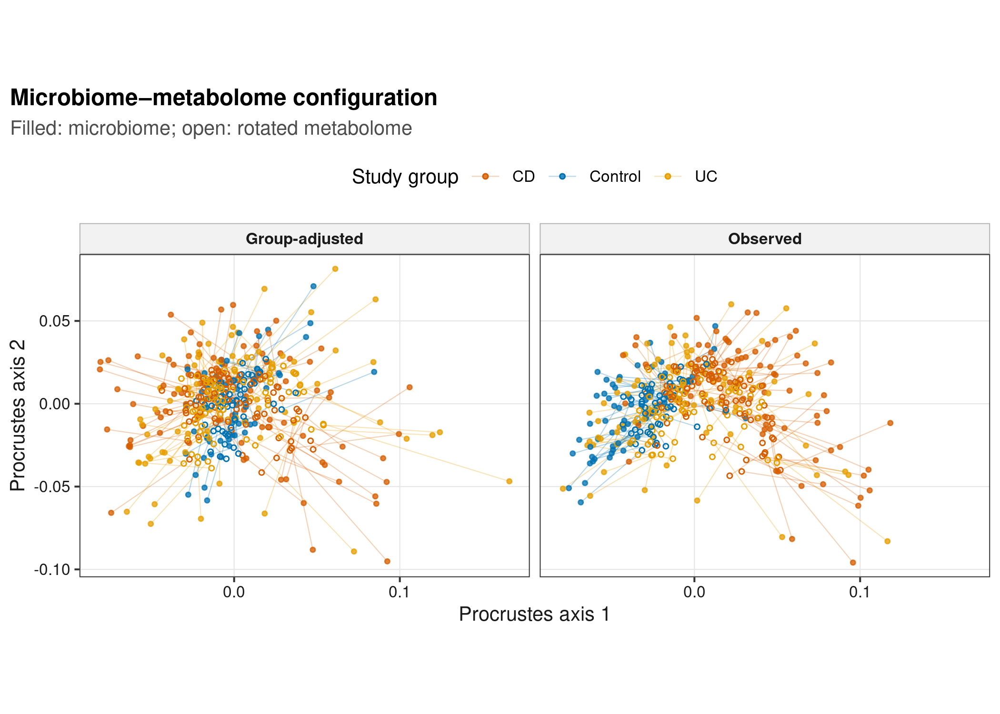
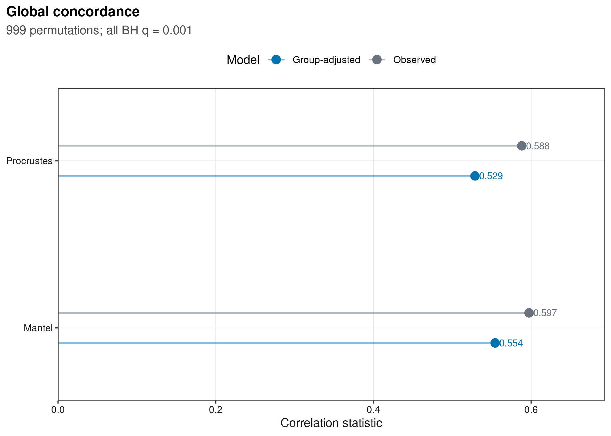
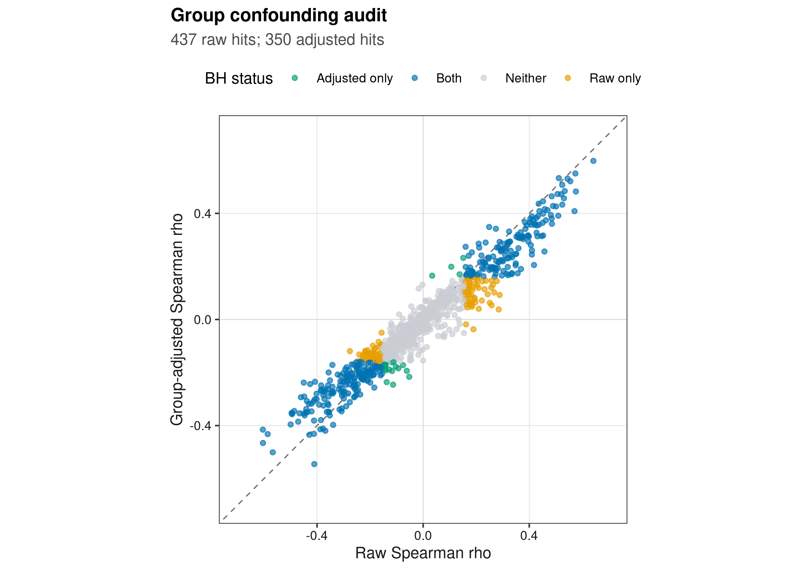
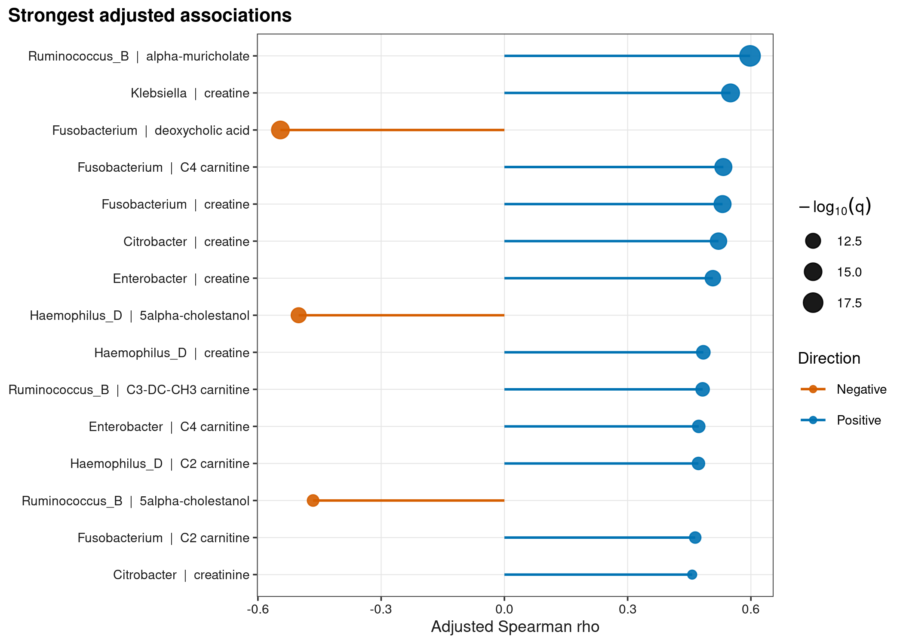

options(timeout = 600)
data_url <- "https://raw.githubusercontent.com/petemeng/microbiome-best-practices/3cb6a817e0c73ab7ecbec1cedc1ad80cbb9ecfaa/"
input_files <- c(
"scripts/run_article46_global_concordance.R",
"scripts/run_article46_halla.py",
"env/multiomics.yml",
"data/small/paired-ibd-multiomics/metabolite-annotation.tsv",
"data/small/paired-ibd-multiomics/metabolites.tsv",
"data/small/paired-ibd-multiomics/metadata.tsv",
"data/small/paired-ibd-multiomics/otutab.tsv",
"data/small/paired-ibd-multiomics/source-summary.json",
"data/small/paired-ibd-multiomics/taxonomy.tsv"
)
for (path in input_files) {
dir.create(dirname(path), recursive = TRUE, showWarnings = FALSE)
if (!file.exists(path)) download.file(paste0(data_url, path), path, mode = "wb", quiet = TRUE)
}相关整合：Procrustes/Mantel/HAllA
跨组学相关首先要保证样本与统计单位对齐
Franzosa et al. (2019)联合粪便宏基因组与代谢组刻画 IBD；公开整理仓库提供可追溯的配对 genus counts、metabolites 与 diagnosis metadata。
重要先给结论
Observed 数据中 Procrustes correlation 为 0.588、Mantel Spearman 为 0.597；校正 Control/CD/UC 后仍分别为 0.529 与 0.554（四次 permutation test 均为 \(P=0.001\)）。不过，1,000 对候选关联的 FDR hits 从 437 降到 350。整体结构相似不等于每条边可靠，局部相关也不等于代谢转化或因果。
下载并读取本次分析的数据
需要 R，以及 ggplot2、jsonlite、permute、ragg、readr、svglite、vegan。本次使用配对的微生物组、代谢组、样本信息及代谢物注释表。
在一个新建的文件夹中运行以下代码，下载文件后按文中的顺序继续分析：
library(ggplot2)
set.seed(20260746)
font_pub <- "sans"
pal_pub <- c(
blue = "#0072B2", orange = "#E69F00", green = "#009E73",
vermillion = "#D55E00", purple = "#CC79A7", sky = "#56B4E9",
yellow = "#F0E442", grey = "#6B7280"
)
scale_color_pub <- function(..., values = unname(pal_pub)) {
ggplot2::scale_color_manual(..., values = values)
}
scale_fill_pub <- function(..., values = unname(pal_pub)) {
ggplot2::scale_fill_manual(..., values = values)
}
theme_pub <- function(base_size = 10, base_family = font_pub) {
ggplot2::theme_bw(base_size = base_size, base_family = base_family) +
ggplot2::theme(
panel.grid.minor = ggplot2::element_blank(),
panel.grid.major = ggplot2::element_line(colour = "#E6E6E6", linewidth = 0.25),
axis.text = ggplot2::element_text(colour = "#1A1A1A"),
axis.title = ggplot2::element_text(colour = "#1A1A1A"),
plot.title.position = "plot",
plot.title = ggplot2::element_text(face = "bold", size = ggplot2::rel(1.15)),
plot.subtitle = ggplot2::element_text(colour = "#4D4D4D"),
plot.caption = ggplot2::element_text(colour = "#666666", hjust = 0),
strip.background = ggplot2::element_rect(fill = "#F2F2F2", colour = "#B3B3B3"),
strip.text = ggplot2::element_text(face = "bold"),
legend.key = ggplot2::element_blank(), legend.position = "top"
)
}
save_pub <- function(plot, file_base, width = 89, height = 70, units = "mm", dpi = 600) {
dir.create(dirname(file_base), recursive = TRUE, showWarnings = FALSE)
ggplot2::ggsave(paste0(file_base, ".pdf"), plot, width = width, height = height,
units = units, device = grDevices::cairo_pdf, family = font_pub, bg = "white")
ggplot2::ggsave(paste0(file_base, ".svg"), plot, width = width, height = height,
units = units, device = svglite::svglite, bg = "white")
ggplot2::ggsave(paste0(file_base, ".png"), plot, width = width, height = height,
units = units, dpi = dpi, device = ragg::agg_png, bg = "white")
ggplot2::ggsave(paste0(file_base, ".tiff"), plot, width = width, height = height,
units = units, dpi = dpi, device = ragg::agg_tiff,
compression = "lzw", bg = "white")
invisible(plot)
}从三件套与配对代谢组读起
read_keyed_tsv <- function(path) {
x <- readr::read_tsv(path, show_col_types = FALSE, progress = FALSE,
name_repair = "minimal", na = character())
ids <- as.character(x[[1L]])
stopifnot(!anyDuplicated(ids))
out <- as.data.frame(x[-1L], check.names = FALSE)
rownames(out) <- ids
out
}
data_dir <- "data/small/paired-ibd-multiomics"
otutab_raw <- read_keyed_tsv(file.path(data_dir, "otutab.tsv"))
taxonomy <- read_keyed_tsv(file.path(data_dir, "taxonomy.tsv"))
metadata <- read_keyed_tsv(file.path(data_dir, "metadata.tsv"))
metabolites_raw <- read_keyed_tsv(file.path(data_dir, "metabolites.tsv"))
metabolite_annotation <- read_keyed_tsv(
file.path(data_dir, "metabolite-annotation.tsv")
)
otutab <- as.matrix(data.frame(lapply(otutab_raw, as.numeric), check.names = FALSE))
metabolites <- as.matrix(data.frame(
lapply(metabolites_raw, as.numeric), check.names = FALSE
))
rownames(otutab) <- rownames(otutab_raw)
rownames(metabolites) <- rownames(metabolites_raw)
stopifnot(
nrow(otutab) == 250L, ncol(otutab) == 220L,
nrow(metabolites) == 277L, ncol(metabolites) == 220L,
identical(colnames(otutab), rownames(metadata)),
identical(colnames(metabolites), rownames(metadata)),
identical(
as.integer(table(metadata$StudyGroup)[c("CD", "Control", "UC")]),
c(88L, 56L, 76L)
)
)
head(otutab[, 1:5])
head(taxonomy)
head(metadata)
head(metabolites[, 1:5]) PRISM.7122 PRISM.7147 PRISM.7150 PRISM.7153 PRISM.7184
MB_G001 453719 10530766 11892271 7512181 1046534
MB_G002 869654 6592783 3427735 922276 3202362
MB_G003 10991530 8375177 6081649 38477 513707
MB_G004 23786 8482569 411525 2994933 25506
MB_G005 20363 4186641 1152397 24974 1631929
MB_G006 42243 1231904 12103817 959 536343
Kingdom Phylum Class Order Family
MB_G001 Bacteria Bacteroidota Bacteroidia Bacteroidales Bacteroidaceae
MB_G002 Bacteria Firmicutes_A Clostridia Lachnospirales Lachnospiraceae
MB_G003 Bacteria Bacteroidota Bacteroidia Bacteroidales Bacteroidaceae
MB_G004 Bacteria Firmicutes_A Clostridia Lachnospirales Lachnospiraceae
MB_G005 Bacteria Firmicutes_A Clostridia Oscillospirales Ruminococcaceae
MB_G006 Bacteria Bacteroidota Bacteroidia Bacteroidales Rikenellaceae
Genus Species
MB_G001 Bacteroides NA
MB_G002 Blautia_A NA
MB_G003 Phocaeicola NA
MB_G004 Agathobacter NA
MB_G005 Faecalibacterium NA
MB_G006 Alistipes NA
Lineage
MB_G001 d__Bacteria;p__Bacteroidota;c__Bacteroidia;o__Bacteroidales;f__Bacteroidaceae;g__Bacteroides
MB_G002 d__Bacteria;p__Firmicutes_A;c__Clostridia;o__Lachnospirales;f__Lachnospiraceae;g__Blautia_A
MB_G003 d__Bacteria;p__Bacteroidota;c__Bacteroidia;o__Bacteroidales;f__Bacteroidaceae;g__Phocaeicola
MB_G004 d__Bacteria;p__Firmicutes_A;c__Clostridia;o__Lachnospirales;f__Lachnospiraceae;g__Agathobacter
MB_G005 d__Bacteria;p__Firmicutes_A;c__Clostridia;o__Oscillospirales;f__Ruminococcaceae;g__Faecalibacterium
MB_G006 d__Bacteria;p__Bacteroidota;c__Bacteroidia;o__Bacteroidales;f__Rikenellaceae;g__Alistipes
DisplayName
MB_G001 Bacteroides
MB_G002 Blautia_A
MB_G003 Phocaeicola
MB_G004 Agathobacter
MB_G005 Faecalibacterium
MB_G006 Alistipes
Dataset Subject StudyGroup Age Age.Units
PRISM.7122 FRANZOSA_IBD_2019 PRISM.7122 CD 38 Years
PRISM.7147 FRANZOSA_IBD_2019 PRISM.7147 CD 50 Years
PRISM.7150 FRANZOSA_IBD_2019 PRISM.7150 CD 41 Years
PRISM.7153 FRANZOSA_IBD_2019 PRISM.7153 CD 51 Years
PRISM.7184 FRANZOSA_IBD_2019 PRISM.7184 CD 68 Years
PRISM.7238 FRANZOSA_IBD_2019 PRISM.7238 CD 67 Years
DOI
PRISM.7122 10.1038/s41564-018-0306-4
PRISM.7147 10.1038/s41564-018-0306-4
PRISM.7150 10.1038/s41564-018-0306-4
PRISM.7153 10.1038/s41564-018-0306-4
PRISM.7184 10.1038/s41564-018-0306-4
PRISM.7238 10.1038/s41564-018-0306-4
PublicationName
PRISM.7122 Gut microbiome structure and metabolic activity in inflammatory bowel disease
PRISM.7147 Gut microbiome structure and metabolic activity in inflammatory bowel disease
PRISM.7150 Gut microbiome structure and metabolic activity in inflammatory bowel disease
PRISM.7153 Gut microbiome structure and metabolic activity in inflammatory bowel disease
PRISM.7184 Gut microbiome structure and metabolic activity in inflammatory bowel disease
PRISM.7238 Gut microbiome structure and metabolic activity in inflammatory bowel disease
FecalCalprotectin antibiotic immunosuppressant mesalamine steroids
PRISM.7122 207 No Yes No No
PRISM.7147 NA No No Yes No
PRISM.7150 218 No Yes No No
PRISM.7153 NA No No Yes No
PRISM.7184 20 No No No No
PRISM.7238 3 Yes Yes No Yes
PRISM.7122 PRISM.7147 PRISM.7150 PRISM.7153 PRISM.7184
MT_M001 1512.2600 512.290 3716.9300 21.9432 0.0000
MT_M002 51.2708 30.878 0.0000 771.3020 505.4620
MT_M003 603.6030 345.589 32.4742 185.2380 801.6310
MT_M004 0.0000 0.000 0.0000 0.0000 0.0000
MT_M005 235.8610 109.167 227.9400 77.5904 94.4461
MT_M006 0.0000 0.000 0.0000 1035.2100 0.0000下载完整 R 脚本。脚本包含数据下载、计算和图形导出。
首次使用时安装 R 包
install.packages(c(
"eva", "ggplot2", "jsonlite", "permute", "ragg", "readr", "scales",
"svglite", "systemfonts", "vegan", "XICOR"
))整体一致与局部关联回答不同问题
Procrustes 比较两个低维构型
先分别对微生物 CLR matrix 与 log-scaled metabolite matrix 求样本距离并排序。Procrustes 通过旋转、缩放和平移，把一个构型对齐到另一个构型；相关系数越高，表示样本在两个空间中的相对位置越一致。
Mantel 比较两张距离矩阵
Mantel statistic 是两张样本距离矩阵上三角元素的相关。它能检验整体 distance concordance，但不能定位是哪一对菌—代谢物驱动结果，也不替代 multivariable model。空间、自相关、重复测量或 family structure 存在时，必须按设计限制 permutations。
HAllA 在相关矩阵上找层级 blocks
HAllA 同时聚类两个 feature sets，并在 hierarchy 中寻找显著的 association blocks，减少逐对展示造成的信息碎片。本文用 Spearman、999 permutations、BH FDR 0.05 与 FNR threshold 0.20；block 是统计摘要，不是 biochemical pathway。
共同 diagnosis 会制造跨组学相关
若某菌和某代谢物都在 IBD 中升高，即使个体内没有直接联系，合并三组后仍会相关。本文先对每个 feature 回归 StudyGroup，再对 residuals 计算局部关联；全局校正版同样先去除组均值，并把 permutations 限制在组内。
深入：为什么 Mantel 显著不能替代 feature-level model
Mantel statistic 把所有 pairwise distances 压缩成一个数；不同机制可产生相同 statistic。它还无法告诉你 effect direction、单个 feature 的不确定性或 clinical covariates 是否充分调整。最稳妥的定位是：用它回答“两个视图是否共享结构”，再用预先限定的 feature-level model 回答“哪些关系值得验证”。
先比较整体一致性，再寻找局部关联
同时检验整体一致性与局部相关
从配对数据重新计算整体一致性、分组调整后的局部相关和 HAllA。
先在 Linux 或 WSL2 终端创建对应环境，回到 R 后运行计算代码。
conda env create --prefix ./multiomics-env --file env/multiomics.ymlrun_analysis <- function(command, args) {
output <- system2(command, args, stdout = TRUE, stderr = TRUE)
status <- attr(output, "status")
if (!is.null(status) && status != 0L) stop(paste(tail(output, 20), collapse = "\n"))
invisible(output)
}
run_analysis(file.path(R.home("bin"), "Rscript"), c("--vanilla", "scripts/run_article46_global_concordance.R"))
run_analysis(Sys.getenv("MULTIOMICS_PYTHON", "multiomics-env/bin/python"), c("scripts/run_article46_halla.py"))完整计算脚本：run_article46_global_concordance.R、run_article46_halla.py。
全局 Procrustes 与 Mantel：同时做 group-adjusted audit
整体检验同时保留未调整和组内调整的统计量；关键变换如下。
模型调用与参数
library(permute)
library(vegan)
microbe_log <- log(t(otutab) + 0.5)
microbe_clr <- microbe_log - rowMeans(microbe_log)
metabolite_scaled <- scale(log1p(t(metabolites)))
metabolite_scaled[, !is.finite(colSums(metabolite_scaled))] <- 0
design <- model.matrix(~ StudyGroup, data = metadata)
residualize <- function(x) lm.fit(design, x)$residuals
views <- list(
Observed = list(Microbiome = microbe_clr, Metabolome = metabolite_scaled),
`Group-adjusted` = list(
Microbiome = residualize(microbe_clr),
Metabolome = residualize(metabolite_scaled)
)
)
set.seed(20260726)
for (model_name in names(views)) {
dx <- dist(views[[model_name]]$Microbiome)
dy <- dist(views[[model_name]]$Metabolome)
x <- cmdscale(dx, k = 5)
y <- cmdscale(dy, k = 5)
control <- if (model_name == "Observed") how(nperm = 999) else
how(nperm = 999, blocks = metadata$StudyGroup)
print(protest(x, y, permutations = control, symmetric = TRUE))
print(mantel(dx, dy, method = "spearman", permutations = control))
}result_dir <- "results/46-integration"
global_tests <- readr::read_tsv(
file.path(result_dir, "global-concordance.tsv"), show_col_types = FALSE
)
procrustes_arrows <- readr::read_tsv(
file.path(result_dir, "procrustes-arrows.tsv"), show_col_types = FALSE
)
stopifnot(nrow(global_tests) == 4L, all(global_tests$QValue <= 0.001))
global_tests# A tibble: 4 × 5
Model Method Statistic PValue QValue
<chr> <chr> <dbl> <dbl> <dbl>
1 Observed Procrustes 0.588 0.001 0.001
2 Observed Mantel 0.597 0.001 0.001
3 Group-adjusted Procrustes 0.529 0.001 0.001
4 Group-adjusted Mantel 0.554 0.001 0.001局部相关与 HAllA
先按 CLR/log1p variance 固定 25 个菌和 40 个代谢物，对每个 feature 回归 StudyGroup。HAllA 的核心调用如下；输入表是 features × samples。
模型调用与参数
from halla import HAllA
model = HAllA(
pdist_metric="spearman", linkage_method="average",
permute_iters=999, permute_func="gpd", fdr_alpha=0.05,
fdr_method="fdr_bh", fnr_thresh=0.20, rank_cluster="best",
out_dir="results/46-integration/halla-v1",
num_threads=4, seed=20260726, no_progress=True
)
model.load(
"results/46-integration/halla-microbes-group-residual.tsv",
"results/46-integration/halla-metabolites-group-residual.tsv"
)
model.run()raw_pairs <- readr::read_tsv(
file.path(result_dir, "pairwise-raw.tsv"), show_col_types = FALSE
)
adjusted_pairs <- readr::read_tsv(
file.path(result_dir, "pairwise-group-residual.tsv"), show_col_types = FALSE
)
halla_associations <- readr::read_tsv(
file.path(result_dir, "halla-v1", "all_associations.txt"),
show_col_types = FALSE
)
halla_blocks <- readr::read_tsv(
file.path(result_dir, "halla-v1", "sig_clusters.txt"),
show_col_types = FALSE
)
halla_summary <- jsonlite::read_json(
file.path(result_dir, "summary.json"), simplifyVector = TRUE
)
stopifnot(
nrow(raw_pairs) == 1000L, nrow(adjusted_pairs) == 1000L,
sum(raw_pairs$QValue < 0.05) == 437L,
sum(adjusted_pairs$QValue < 0.05) == 350L,
nrow(halla_blocks) == 70L
)
head(halla_blocks, 5)# A tibble: 5 × 4
cluster_rank cluster_X cluster_Y best_adjusted_pvalue
<dbl> <chr> <chr> <dbl>
1 1 Lacticaseibacillus [MB_G193];Pedi… carnosol… 1.02e-19
2 2 Lacticaseibacillus [MB_G193];Pedi… deoxycho… 6.48e-16
3 3 CAG-417 [MB_G202] C34:1 PC… 1.63e- 6
4 4 Longicatena [MB_G128] C56:1 TA… 2.69e- 6
5 5 Ruminococcus_B [MB_G011] imidazol… 7.75e- 6全局一致不等于具体特征关联
- 先审配对。这里 220 个 sample IDs 在两个视图中顺序完全一致；任何丢样或重复都应在分析前停止，而不是由函数静默取交集。
- 先画 raw，再画 adjusted。437 个 raw hits 中有一部分只是 diagnosis separation；校正后 350 个 hits 才进入 HAllA。若还有 age、medication、batch，应一起进入 design。
- 全局检验报告 effect。样本多时很小的 concordance 也会显著；本例同时给 statistic 与 permutation \(P\)，不只写“显著相关”。
- association family 预先定义。FDR 的分母是固定的 25 × 40 = 1,000 对，而不是看完结果再缩小范围。
- 独立验证。优先在新 cohort 检验预注册的少量 pairs；代谢转化还需 isotope tracing、culture experiment、gene/pathway 或 intervention evidence。
警告结果边界
HAllA 找到 70 个显著 blocks、350 个显著 feature pairs，并不表示存在 350 条直接代谢反应。宿主炎症、饮食、药物、肠道 transit 与总生物量都可能同时改变两个视图。
区分组间分离与组内跨组学关联
图 1：配对样本的 Procrustes arrows
group_colors <- c(
Control = unname(pal_pub["blue"]),
CD = unname(pal_pub["vermillion"]),
UC = unname(pal_pub["orange"])
)
p46_1 <- ggplot(procrustes_arrows) +
geom_segment(
aes(x = StartAxis1, y = StartAxis2, xend = EndAxis1, yend = EndAxis2,
colour = StudyGroup),
linewidth = 0.25, alpha = 0.28
) +
geom_point(aes(StartAxis1, StartAxis2, colour = StudyGroup), size = 0.8, alpha = 0.75) +
geom_point(aes(EndAxis1, EndAxis2, colour = StudyGroup), shape = 1, size = 0.9) +
facet_wrap(~ Model) +
scale_color_manual(values = group_colors) +
labs(
x = "Procrustes axis 1", y = "Procrustes axis 2", colour = "Study group",
title = "Microbiome–metabolome configuration",
subtitle = "Filled: microbiome; open: rotated metabolome"
) +
coord_equal() + theme_pub()
save_pub(p46_1, "figures/46-integration/46-1-procrustes", 180, 78)
p46_1
图 2：展示整体关联统计量与置换结果
global_tests$YPosition <- ifelse(global_tests$Method == "Mantel", 1, 2) +
ifelse(global_tests$Model == "Group-adjusted", -0.09, 0.09)
p46_2 <- ggplot(global_tests, aes(Statistic, YPosition, colour = Model)) +
geom_segment(aes(x = 0, xend = Statistic, yend = YPosition), linewidth = 0.6, alpha = 0.5) +
geom_point(size = 3) +
geom_text(aes(label = sprintf("%.3f", Statistic)), hjust = -0.18,
size = 2.8, family = font_pub, show.legend = FALSE) +
scale_color_manual(values = c(
Observed = unname(pal_pub["grey"]),
`Group-adjusted` = unname(pal_pub["blue"])
)) +
scale_x_continuous(limits = c(0, 0.68), expand = expansion(mult = c(0, 0.02))) +
scale_y_continuous(breaks = c(1, 2), labels = c("Mantel", "Procrustes"),
limits = c(0.65, 2.35)) +
labs(x = "Correlation statistic", y = NULL, colour = "Model",
title = "Global concordance", subtitle = "999 permutations; all BH q = 0.001") +
theme_pub()
save_pub(p46_2, "figures/46-integration/46-2-global-tests", 89, 66)
p46_2
图 3：分组校正如何改变 1,000 条局部相关
pair_audit <- merge(
raw_pairs[, c("Microbe", "Metabolite", "Rho", "QValue")],
adjusted_pairs[, c("Microbe", "Metabolite", "Rho", "QValue")],
by = c("Microbe", "Metabolite"), suffixes = c("Raw", "Adjusted")
)
pair_audit$Status <- ifelse(
pair_audit$QValueRaw < 0.05 & pair_audit$QValueAdjusted < 0.05, "Both",
ifelse(pair_audit$QValueRaw < 0.05, "Raw only",
ifelse(pair_audit$QValueAdjusted < 0.05, "Adjusted only", "Neither"))
)
status_colors <- c(
Both = unname(pal_pub["blue"]),
`Raw only` = unname(pal_pub["orange"]),
`Adjusted only` = unname(pal_pub["green"]),
Neither = "#C9CDD3"
)
p46_3 <- ggplot(pair_audit, aes(RhoRaw, RhoAdjusted, colour = Status)) +
geom_abline(slope = 1, intercept = 0, colour = "#777777", linetype = 2, linewidth = 0.4) +
geom_hline(yintercept = 0, colour = "#DDDDDD", linewidth = 0.3) +
geom_vline(xintercept = 0, colour = "#DDDDDD", linewidth = 0.3) +
geom_point(size = 1.2, alpha = 0.65) +
scale_color_manual(values = status_colors) +
labs(
x = "Raw Spearman rho", y = "Group-adjusted Spearman rho", colour = "BH status",
title = "Group confounding audit",
subtitle = "437 raw hits; 350 adjusted hits"
) +
coord_equal(xlim = c(-0.7, 0.7), ylim = c(-0.7, 0.7)) + theme_pub()
save_pub(p46_3, "figures/46-integration/46-3-confounding-audit", 89, 82)
p46_3
图 4：HAllA 输入中最强的 group-adjusted pairs
top_halla <- head(adjusted_pairs, 15)
top_halla$Association <- paste0(
sub(" \\[MB_.*$", "", top_halla$Microbe), " | ",
sub(" \\[MT_.*$", "", top_halla$Metabolite)
)
top_halla$Association <- factor(top_halla$Association, levels = rev(top_halla$Association))
p46_4 <- ggplot(top_halla, aes(Rho, Association, colour = Rho > 0)) +
geom_segment(aes(x = 0, xend = Rho, yend = Association), linewidth = 0.65) +
geom_point(aes(size = -log10(QValue)), alpha = 0.9) +
scale_color_manual(values = c(
`TRUE` = unname(pal_pub["blue"]),
`FALSE` = unname(pal_pub["vermillion"])
),
labels = c(`TRUE` = "Positive", `FALSE` = "Negative")) +
scale_size_continuous(range = c(2, 5)) +
labs(x = "Adjusted Spearman rho", y = NULL, colour = "Direction",
size = expression(-log[10](q)), title = "Strongest adjusted associations") +
theme_pub(9) + theme(legend.position = "right")
save_pub(p46_4, "figures/46-integration/46-4-halla-associations", 180, 105)
p46_4
常见坑
注意审稿人最常追问的五件事
- 两个表不是同一批样本，或 sample order 静默错位。
- 对 raw relative abundance 直接 Pearson correlation，没有处理 closure、zeros 与 nonlinear relation。
- permutations 无视 repeated subject、site 或 household，导致伪精确。
- 只展示筛中的 edges，不交代完整 tested family 与 FDR。
- 把 taxon–metabolite association 写成“该菌产生该代谢物”。
报告跨组学关联与混杂调整的方法与限制
Paired microbiome and metabolome profiles were available for 220 samples (56 controls, 88 Crohn’s disease and 76 ulcerative colitis). Microbial counts were transformed using a pseudocount-0.5 centered log-ratio transformation; metabolite intensities were log1p-transformed and feature-standardized. Global concordance was quantified using symmetric Procrustes analysis and Spearman Mantel tests with 999 permutations. Diagnosis-adjusted analyses were performed on residuals from feature-wise models containing study group, with permutations restricted within diagnosis groups. For local integration, 25 microbial and 40 metabolite features were selected by outcome-blind variance, tested with Spearman association, and analyzed with HAllA v0.8.40 using 999 permutations, Benjamini–Hochberg FDR 0.05 and FNR threshold 0.20. Effect estimates and adjusted P values were reported; associations were not interpreted as causal or metabolic-production evidence.
将跨组学关联与混杂调整用于自己的研究
- 替换
otutab.tsv、taxonomy.tsv、metadata.tsv、metabolites.tsv和 annotation 路径；两个 abundance tables 的列必须与 metadata 行名完全一致。 - 把
StudyGroup换成你的 diagnosis/treatment 列；若有 batch、age、sex、site 或 repeated subject，把它们加入 residualization model，并按采样设计限制 permutations。 - feature filter 必须在看 association 之前固定，并在 Methods 报告完整测试数。
- 若是 longitudinal data，不要把同一受试者多个时间点当独立样本；考虑 subject-level blocking、mixed model 或先预定义一个 timepoint。
参考
- Franzosa EA, et al. Gut microbiome structure and metabolic activity in inflammatory bowel disease. Nature Microbiology. 2019. https://doi.org/10.1038/s41564-018-0306-4
- Ghazi AR, et al. High-sensitivity pattern discovery in large, paired multiomic datasets. Bioinformatics. 2022. https://doi.org/10.1093/bioinformatics/btac147
- Peres-Neto PR, Jackson DA. How well do multivariate data sets match? The advantages of a Procrustean superimposition approach over the Mantel test. Oecologia. 2001. https://doi.org/10.1007/s004420100720
- Oksanen J, et al. vegan: Community Ecology Package. https://CRAN.R-project.org/package=vegan
- Borenstein Lab. CuratedMetagenomicDataMetabolome. Fixed source commit:
89a519d8c832008fbc6e650453e83e2f04858d02. https://github.com/borenstein-lab/CuratedMetagenomicDataMetabolome